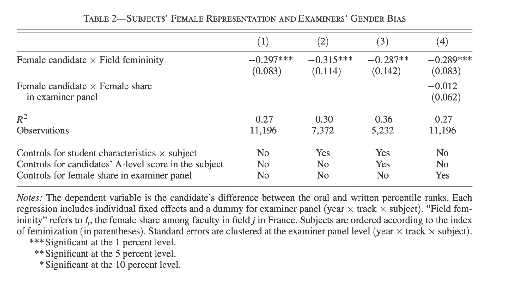

//@得蜜:有的时候在我儿子脸上看到我公公的基因痕迹我也是这个赶脚……而且，我儿子，我老公，我公公那个相似度，也没法忽略…… 假如说我公公拥有100%的槽点，那我老公就是继承了30%（which是我最不喜欢他的30%）。

Ada李力
2020-08-24

Ada李力
2020-08-24
赞这条对录取比例更详细的研究。断章取义只是为得出有利于自己的结论，这种事情别做。干多了的话，以后即使有理有据地说话，别人也不会相信。
@yiqin_fu:
网上热传“巴黎高师取消口试后录取女性比例大增”。但现在看来，是原文作者挑了两个误导人的数据分享。原作者提到今年“超高的女性比例”，其实只是“文科一类”这一个科目。该科目今年录取的学生里，女性比例的确很高（78%），但只比去年的对应数据（65%）高了一点。在分母只有六七十人的情况下，比例出现大幅波动也不奇怪。
另外，原作者为了突出女性比例高，并没有将 78% 和文科一类去年的女性比例（65%）相比，而是说 “78% 远高于巴黎高师近年各科录取总人数的女性比例（约 40%）”。由于巴黎高师除了文科一类还有其他好几个门类，所以比较这两个数字完全没有意义。
在原作者的评论区里，有很多研究相关领域的教授分享了他们读过的研究。2015 年有一篇经济学论文就是比较巴黎高师的笔试、口试成绩，看口试考官在打分时有什么性别偏向。论文作者发现，女性比例高的学科（文学、外语、生物），教授会在口试轮偏向男性；女性比例低的学科里（数学、哲学），教授会在口试轮偏向女性。口试轮大概起到一个“平衡性别比例”的作用。
以下是各科 2004-2009 以及今年的女性比例对比。可以看出，1）取消口试后的性别比例变动并没有特别大；2）理科在取消口试之后，女性比例降低；文科在取消口试后，女性比例升高；3）巴黎高师每一科所招的人数都很少，不适合拿某一年的数据出来单独分析。
文科一类（AL，每年六七十人）59%，78%
文科二类（BL，每年二三十人）：47%，36%
理科一类（MP，每年三四十人）：12%，8%
理科二类（PC，每年一二十人）：13%，11%
理科三类（BCPST，每年二三十人）：44%，38%
总结：当你看到“天呐我要转发给全世界”的数据，请停下来看一眼它的信息来源。如果原文有评论，请去看一眼评论。如果你对原文涉及的领域不了解、看不懂原文引用的资料，请谨慎转发。我也是看了原文的评论才知道问题出在哪里。我自己发布、分享的数据可能也经常有误。希望大家都保持谨慎怀疑的心态，对从自己这里传播出去的东西尽量负责。
很多学科悬殊的性别比例确实让人担忧，我们能意识到问题显然已经走出了解决问题的第一步。但发布一些误导甚至明显错误的信息，对解决问题不仅没有帮助，可能还起到反作用。
今年各科的录取名单： 网页链接
网页链接
分析往届数据的论文：网页链接
2004-2009 年的录取人数性别比：网页链接
另外，原作者为了突出女性比例高，并没有将 78% 和文科一类去年的女性比例（65%）相比，而是说 “78% 远高于巴黎高师近年各科录取总人数的女性比例（约 40%）”。由于巴黎高师除了文科一类还有其他好几个门类，所以比较这两个数字完全没有意义。
在原作者的评论区里，有很多研究相关领域的教授分享了他们读过的研究。2015 年有一篇经济学论文就是比较巴黎高师的笔试、口试成绩，看口试考官在打分时有什么性别偏向。论文作者发现，女性比例高的学科（文学、外语、生物），教授会在口试轮偏向男性；女性比例低的学科里（数学、哲学），教授会在口试轮偏向女性。口试轮大概起到一个“平衡性别比例”的作用。
以下是各科 2004-2009 以及今年的女性比例对比。可以看出，1）取消口试后的性别比例变动并没有特别大；2）理科在取消口试之后，女性比例降低；文科在取消口试后，女性比例升高；3）巴黎高师每一科所招的人数都很少，不适合拿某一年的数据出来单独分析。
文科一类（AL，每年六七十人）59%，78%
文科二类（BL，每年二三十人）：47%，36%
理科一类（MP，每年三四十人）：12%，8%
理科二类（PC，每年一二十人）：13%，11%
理科三类（BCPST，每年二三十人）：44%，38%
总结：当你看到“天呐我要转发给全世界”的数据，请停下来看一眼它的信息来源。如果原文有评论，请去看一眼评论。如果你对原文涉及的领域不了解、看不懂原文引用的资料，请谨慎转发。我也是看了原文的评论才知道问题出在哪里。我自己发布、分享的数据可能也经常有误。希望大家都保持谨慎怀疑的心态，对从自己这里传播出去的东西尽量负责。
很多学科悬殊的性别比例确实让人担忧，我们能意识到问题显然已经走出了解决问题的第一步。但发布一些误导甚至明显错误的信息，对解决问题不仅没有帮助，可能还起到反作用。
今年各科的录取名单：
分析往届数据的论文：
2004-2009 年的录取人数性别比：
- 
Ada李力
2020-08-24
#不明所以#
看到关注的女权者批评内环幕僚长只向钱看的观点。
我从这种批评中看到自己的变化，因为按照我以前的认知，内环幕僚长发的各种内容，会让我读着不舒服。而我如果批评的理由，估计跟那些女权主义者一样。
但现在认为内环幕僚长发的内容，是他蛮真挚的总结了，而且通常做到这个位置的人，其实没有太大兴趣去给别人分享经验。所以但凡网上有这类输出，我都是抱着感谢的心情去读，同类现象里还有自我姐，风中的厂长等。
网上是有大量扮白富美或者是精英凹人设，但如果你分辨不出来真假，那即使是再好的实践经验总结放在你面前，你也会认为别人是在装B。
我的观念发生了哪些变化呢？我以前也是挺喜欢批评别人的。喜欢批评别人的，有一些是常年待在书斋里的人，他们用书里面获得的知识来映照外面的世界，如果不符合，那就是外面的世界错了。还有一些人，因为关注点在边缘人群，他们特别接受不了对这些边缘人群的讽刺和贬低言论。
我之前批评别人，多数因为这两点。
我现在有所改变，是发现任何知识如果没有通过自己实践变成新的认知，那些所谓的知识都是人云亦云，照本宣科罢了。而且书斋里的人特别擅长慷他人之慨，因为他自己除了嘴炮，提供不了其它什么有用东西。我后来也意识到，我是占了很多红利的幸运者，这让我跟那些边缘人不是一个群体，但这并不代表我要为此而羞愧或者赎罪。我唯一能做的，就是不对别人的生活指手画脚，应付自己的生活就已经耗尽了太多的精力。
如果忍不住想批评，自己就是个挺好的吐槽靶子，何必吐槽别人呢。
看到关注的女权者批评内环幕僚长只向钱看的观点。
我从这种批评中看到自己的变化，因为按照我以前的认知，内环幕僚长发的各种内容，会让我读着不舒服。而我如果批评的理由，估计跟那些女权主义者一样。
但现在认为内环幕僚长发的内容，是他蛮真挚的总结了，而且通常做到这个位置的人，其实没有太大兴趣去给别人分享经验。所以但凡网上有这类输出，我都是抱着感谢的心情去读，同类现象里还有自我姐，风中的厂长等。
网上是有大量扮白富美或者是精英凹人设，但如果你分辨不出来真假，那即使是再好的实践经验总结放在你面前，你也会认为别人是在装B。
我的观念发生了哪些变化呢？我以前也是挺喜欢批评别人的。喜欢批评别人的，有一些是常年待在书斋里的人，他们用书里面获得的知识来映照外面的世界，如果不符合，那就是外面的世界错了。还有一些人，因为关注点在边缘人群，他们特别接受不了对这些边缘人群的讽刺和贬低言论。
我之前批评别人，多数因为这两点。
我现在有所改变，是发现任何知识如果没有通过自己实践变成新的认知，那些所谓的知识都是人云亦云，照本宣科罢了。而且书斋里的人特别擅长慷他人之慨，因为他自己除了嘴炮，提供不了其它什么有用东西。我后来也意识到，我是占了很多红利的幸运者，这让我跟那些边缘人不是一个群体，但这并不代表我要为此而羞愧或者赎罪。我唯一能做的，就是不对别人的生活指手画脚，应付自己的生活就已经耗尽了太多的精力。
如果忍不住想批评，自己就是个挺好的吐槽靶子，何必吐槽别人呢。